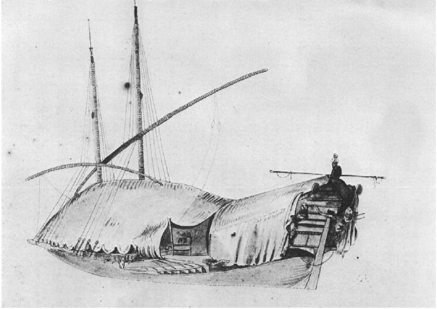

Об одежде гребцов мы уже кратко говорили раньше. Тогда же и поместили иллюстрацию. Норма вещевого довольствия галерников обычно включала (на примере 1676 года) две длинных рубахи (длиной с ночную сорочку) , две пары штанов, пару чулок и шерстяную вязаную шапочку. Кроме того, каждому каторжнику выдавалась куртка и плащ – по одному на два года. Одежда была двух размеров: маленькая и большая. Уходом за своим гардеробом каждый осужденный занимался сам, стирая вещи, когда позволяли обстоятельства. Изношенная одежда заменялась за счет казны раз в два года, первого января, причем половина гребцов получала новую одежду по четным годам, а вторая половина – по нечетным. Старую одежду обычно возвращали поставщику при получении новой. Обувь на галере не предусматривалась, так как не ожидалось, что гребцы смогут далеко уйти на своих закованных в цепи ногах! Но когда людям разрешали или приказывали отправляться на различные работы за пределами галеры под охраной, на это время им выдавалась обувь.
Строго следили, чтобы галерники заботились о сохранности своей одежды, не допуская утраты какой-либо ее части. Утраченная одежда заменялась за счет казны только если это имело место во время кампании. Чтобы контролировать сохранность одежды, королевский указ 1688 г. требовал от комитов проводить проверку вещевого имущества каждое воскресенье; каждый утраченный предмет вещевого имущества восполнялся за счет соответствующего осужденного или раба. Большинство рабов и осужденных обычно накапливали некоторые запасы, из которых можно было бы возместить эти потери. Аргузины и комиты несли личную ответственность за сохранность выданного галерникам вещевого имущества. Таким образом гребец, который терял или проматывал одежду, определенно раздражал людей, которые управляли его повседневной жизнью.
Люди, знающие притягательность южного побережья Франции для проведения отпусков в бархатный сезон, могут полагать, что и зимний сезон на побережье так же приятен. Но зима на юге могла быть весьма суровой, особенно для гребцов галер. Пронизывающий холод мистралей, дующих с севера, делал необходимым использование зимней одежды. Жить зимой в цепях на борту галеры, даже в куртках и плащах и под брезентовыми тентами, которые натягивались над галерами, могло быть горьким испытанием. Вид галеры под тентом приведен в начале этих заметок (рисунок Барраса де ла Пенна из книги У.Бэмфорда) Каторжники, которые продавали одежду, обычно делали это ради выпивки или по каким-то чрезвычайным мотивам. Ни один из каторжников в полном уме не продал бы куртку или плащ, зная, что после этого ему предстоит иметь дело с зимой и со своим комитом. В январе 1670 г., например, интендант Арнуль с необычной заботливостью заметил, что в Марселе установилось «потепление», «которому я рад, из-за бедняг каторжников». В Тулоне ветер и холод были так же суровы. Один мемуарист, добавляя краски к традиционному соперничеству между городами, заметил, что Тулон был «более подвержен ветрам, [чем Марсель]; такие ветры вынуждают галеры убирать тенты, оставляя таким образом гребцов полностью под воздействием холода и дождя; однажды галеры три дня и три ночи находились в таком состоянии, не имея возможность натянуть тенты; этого никогда не случалось в Марселе.»
Почти все историки, несмотря на разногласия в других вопросах, были единодушны в том, что зимний холод вызывал большие потери. Для галер, базирующихся на Атлантике, (это часто имело место на протяжении двух десятилетий после 1689 года) было еще хуже. В 1690-91 гг. пятнадцать галер зимовали в Руане. Руководство было вынуждено принять в связи с этим многие предупредительные меры, включая использование двойной нормы вещевого снабжения и двойной нормы тентов, посланных по срочному запросу из Марселя для защиты гребцов от холодов Бискайского залива и Северного моря. В целом, что касается защиты от плохой погоды, как представляется, король делал все возможное для осужденных и рабов. Вещевое довольствие было, конечно, более щедрым и более близко соответствовало потребностям галерников, чем продовольственный рацион.